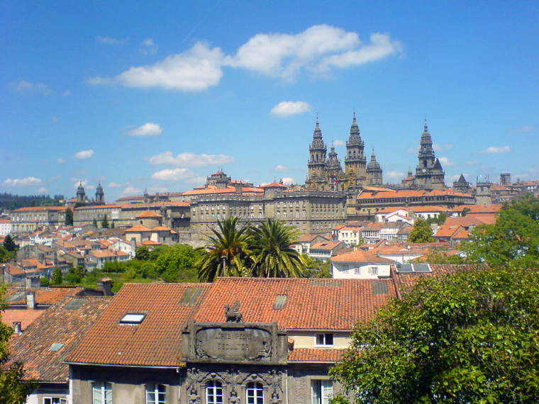
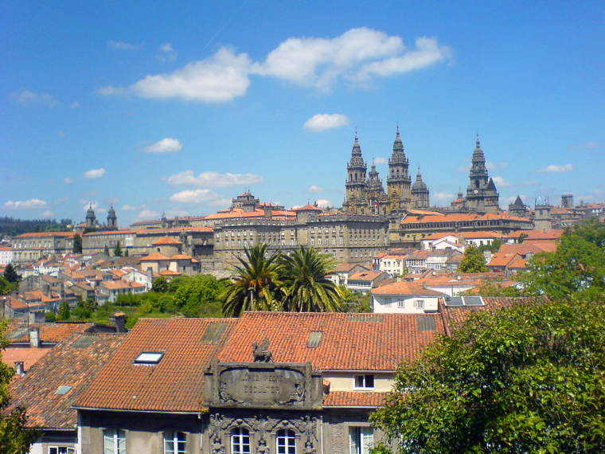

Camino de Santiago - HOWTO
Projít Camino de Santiago může být nádherná zkušenost, ale abyste si to opravdu užili, hodí se trochu vědět co a jak. Protože se mě občas vyptávají lidi, kteří se tam chystají, hodím sem svoje zkušenosti i pár fotek, ať si můžete udělat obrázek, jak to na Caminu chodí.
Hned na začátek ta nejdůležitější rada: BERTE SEBOU JEN TO, CO NEZBYTNĚ POTŘEBUJETE!
Přečetli jste si pozorně předcházející řádek? Ano? Tak se prosím vraťte a přečtěte si ho ještě 3x. Fakt nekecám, mám na mysli jen to co potřebujete opravdu nezbytně! Tohle se zdůrazňuje snad na všech webech o Camino de Santiago, a přesto jsem znovu a znovu viděl, že sebou lidi vláčí knížky a plyšové medvídky... a pak mi smutně vykládají, jak půl cesty šli na práškách kvůli nesnesitelné bolesti kolena.
Když jsem na Camino přijel, zděsil jsem se že mi určitě něco chybí, protože většina lidí měla o polovinu větší batohy než já. Ale když člověku něco chybí, vždycky se to dá nějak sehnat a je to lepší než vláčet nadváhu - nic životně nutného jsem nepostrádal a naopak jsem byl jeden z mála, kdo neměl žádné problémy s nohama.
A problémy s nohama jsou běžné, od puchýřů až po záněty šlach, odepsané kotníky a kolena. Ujdete stovky až tisíce kilometrů, to není jako týdenní trek po Tatrách. Mnozí trpí a někteří dokonce Camino kvůli nohám nedokončí, což je škoda, protože je to ve většině případů způsobené vláčením zbytečností.
Váha batohu by neměla přesahovat 10% vaší váhy, a do toho počítejte i 2 l vody, které v těch španělských vedrech budete občas nést - takže 60kilová holka může sebou mít jen asi tak 4 kg svých věcí. Sorry že vás tak peskuju na čtyři odstavce, ale později mi poděkujete. A nenechte se zmást, když někdo někde napíše, že nesl 17 kilo a nohy ho nebolely - to jsou super-odolní mutanti, podle kterých se my normální nemůžeme řídit.
Co si vzít sebou? Takových doporučených seznamů najdete řadu, přidám svou trochu do mlýna:- Opravdu dobré boty, na které už jsou vaše nohy zvyklé. Počítat s tím, že Camino představuje značnou část životnosti bot, takže pokud ty vaše už mají něco za sebou, zvažte koupi nových s dostatečným předstihem, abyste je stihli rozchodit ještě před tím, než se vydáte na Camino. Já jsem udělal překvapivě dobrou zkušenost s nízkými otevřenými botami - párkrát jsem slyšel otázky jak můžu chodit po horách bez opory kotníků, ale můj názor je, že když si chcete uchránit kotníky, koukat se trochu kam šlapete je důležitější než výška bot. Tenhle názor mám od doby, kdy jsem si kdysi podvrknul kotník v kanadách, protože jsem se kochal panorámaty tak dlouho, až jsem šlápl vedle stezky a spadl do potoka.
- Spodní prádlo - stačí pár kousků, na většině nocleháren se dá vyprat
- Kraťaso-kalhoty. Takové ty, co se dají odepnout nebo vyhrnout nohavice - připadá mi to lepší než tahat krátké i dlouhé kalhoty. Prodyšné!
- Dvě trička. Prodyšné. Bývá takové vedro, že tričko, které jsem v ČR nosil celé léto aniž bych si všimnul něčeho divného, mi ve Španělsku připadalo nesnesitelně dusné.
- Stará košile s odpáranýma rukávama. Ve vedru i větrání kolem ramen a rozepnutým předkem přijde vhod. Navíc se to dá hodit přes tričko jako vrstva navíc, když se večer ochladí.
- Mikča. Nebo fleecovka. Když v horách fouká, hodí se s kapucí.
- Pončo proti dešti. Podle mě je pončo lepší než větrovky a gore-texové bundy. Chrání až po kolena, chrání i batoh, je lehoučké, díky tomu, že je zboku otevřené, je vzdušnější než bunda. Doporučuju rip-stopové armádní, plastikové šunty z outdoorových obchodů nebrat.
- Toaletní potřeby. Jen nutné minimum, čím lehčí tím lepší, půl litru sprchového gelu nebrat!
- Krém na opalování. Vysoký faktor naprostá nezbytnost.
- Ručník. Outdoorovej z mikrovlákna. Obyčejnej ručník je pro tenhle způsob cestování nepoužitelnej, neustále vlhkej, těžkej, a za týden je tak nechutnej že ho můžete vyhodit.
- Zvažte klobouk, v ideálním případě slaměný. Ten jsem sice jakživ nepoužíval, ale když jsem odtrhával kusy kůže ze spálených uší, trpce jsem litoval, že jsem ho nezačal používat včas. Mexičané a kolumbijci s jejich sombrery vědí co dělají.
- Špunty do uší. Zní to srandovně, ale je to naprostá nezbytnost, bez nich se nevyspíte.
- Spacák. Ultralehkej. Kdo chce spávat venku, tak i alumatku.
- Čelovku. Hodí se, když někde zatmíte nebo když v noci prohrabáváte batoh a nechcete rozsvěcovat a budit ostatní poutníky.
- Kapsička na dokumenty/peníze. Taková ta, co se dá nosit pod oblečením na břiše. Španělsko mám hrozně rád, ale jejich kapsáři jsou proslulí svou šikovností.
- Med-kit. Pár náplastí, černé uhlí, Voltaren a Ibuprofen, jen pro jistotu. Snad je nebudete ani potřebovat.
- Hodí se aspoň základy španělštiny, jako třeba názvy jídel a "kde je prosím záchod" - hlavně v malých vesnicích s angličtinou nepochodíte.
Nemusíte se bát, že na to fyzicky "nemáte". Není to tak těžké, když jsem to zvládnul v pohodě já, který jsem tam vyrazil s celkem minimální kondicí, tak to zvládnete taky. Mimochodem, byl jsem až překvapený, kolik je na Caminu poutníků ve zralejším věku nad 60, a taky to zvládají. Jde jen o to nevláčet moc těžký náklad a jít rozumně.
Žádné mapy ani průvodce nejsou potřeba. Cesta je značená dobře, a průvodce si kdyžtak projděte doma, ať nedopadnete jako jeden poutník, kterého jsem na cestě potkával - měl opravdu nádherného průvodce s velkýma barevnýma fotkama, a každý večer s lítostivým výrazem v obličeji ty stránky, které už prošel, vytrhal a zahodil - na Caminu zjistíte, že váha je všechno.
Průvodce jsou těžké jako kráva, a stejně to nevyužijete, protože na Caminu se vědomosti šíří samovolně, a jestli jste trochu komunikativní, tak se cestou dozvíte všechny možné tipy kam jít atd. Co je opravdu užitečné: tady je seznam, ve kterém najdete na kolikátém kilometru je hostel nebo refugio, kolik stojí, jestli je tam restaurace, obchod nebo i banka... vytisknout na 3 listy papíru a nic víc nepotřebujete.
Camino není závod. Na zranění paradoxně častěji trpí ti mladí v kondici, protože ti starší jdou rozumně. Zvolněte a budete v pohodě. Hlavně z kopce to člověka láká svištět dlouhými kroky, a nohy trpí. Jedna zkušená cestovatelka mi poradila, že si musím dávat pozor a snažit se chodit tiše, hlavně z kopce; jakmile je slyšet hlasité dusání tak to už je ničení nohou.
Jděte svým tempem. Docela často se stává, že třeba potkáte někoho zajímavého, chcete se seznamovat tak se k němu přidáte i když jde rychleji než by se vám líbilo, a třetí den najednou nemůžete došlápnout.
Alternativní Caminos - občas se cesta rozdvojuje a od původní trasy odbočuje oklika. Vždycky je lepší jít oklikou! To jsou ty nejkrásnější části Camina. Jedna taková rozdvojka je kousek za vinnou fontánou v Irache: jedna cesta doprava po rovině, druhá rovně do kopce - a ta vás přes kopce dovede do nádherného liduprázdného údolí, kterým půjdete celé hodiny. Další taková odbočka vede přes klášter Samos, který taky stojí za návštěvu.
Buen camino!
 
